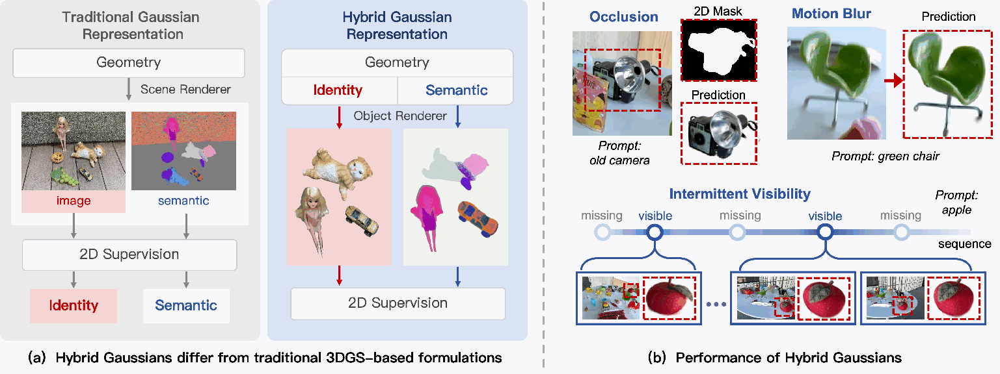
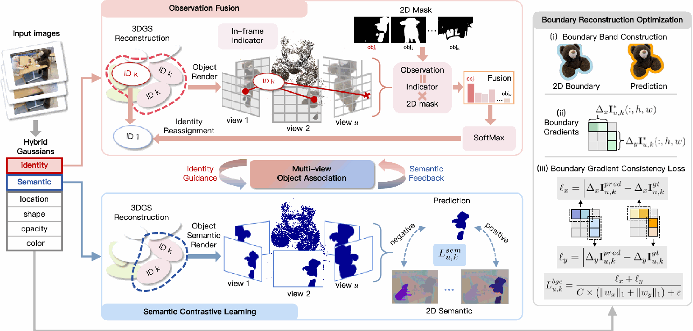
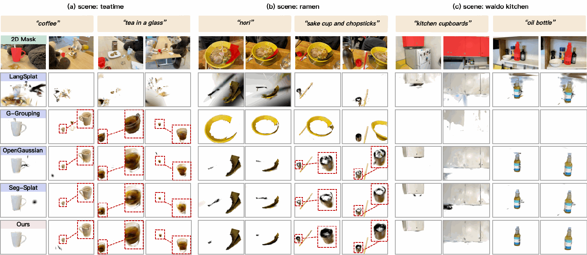
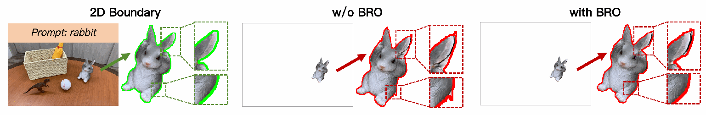

Observation Fusion
Fuse object-mask support across views to update Gaussian identity assignments and build more reliable object support.
OPEN-VOCABULARY 3D SEGMENTATION
with Multi-View Object Association
and Boundary Refinement
Object identity meets language-aligned semantics.
Consistent across views. Precise at the boundaries.
SEE IT IN 3D
Explore multi-view segmentation results. Each clip shows the original scene, the predicted object, and its depth.
LERF · average mIoU
3D-OVS · average mIoU
Relative gain over Seg-Splat on LERF
ABSTRACT
Open-vocabulary 3D segmentation aims to localize objects in 3D scenes from free-form text queries, providing a flexible interface for language-guided scene understanding. Recent progress in vision-language models and neural scene representations has advanced this area by lifting 2D cues into 3D and enriching NeRF- or 3DGS-based scene representations with semantic or identity information. However, robust object-level segmentation remains challenging in real image sequences, where incomplete or noisy 2D supervision can destabilize multi-view identity assignment, while full-scene semantic learning can weaken object-level discriminability.
To address these issues, we introduce Hybrid Gaussians, a unified 3D representation that jointly models object association and language-aligned semantics, along with a Multi-View Object Association mechanism that combines Observation Fusion and Semantic Contrastive Learning. We further introduce Boundary Reconstruction Optimization to explicitly improve contour quality by refining local boundary structure. Experiments on LERF and 3D-OVS demonstrate strong quantitative and qualitative performance. In particular, our method achieves 59.1% mIoU on LERF, yielding a 13.43% relative gain over the baseline. These results show that jointly optimizing object association and boundary-aware refinement substantially improves open-vocabulary 3D segmentation.
THE METHOD
Each Gaussian carries both an object identity and a learnable language-aligned semantic embedding, enabling object-conditioned rendering and learning.


Fuse object-mask support across views to update Gaussian identity assignments and build more reliable object support.
Render object-conditioned semantic features and align them across views to improve language-level discrimination.
Align image gradients near object contours to refine local structure and recover sharper segmentation boundaries.
EXPERIMENTS
Open-vocabulary segmentation on LERF and 3D-OVS. All values are mIoU (%); higher is better. Results are reproduced from Table 1 of the paper.
| Method | Figurines | Teatime | Ramen | Kitchen | Average ↑ |
|---|---|---|---|---|---|
| LERF | 38.6 | 45.0 | 28.2 | 37.9 | 37.4 |
| LEGaussians | 40.8 | 60.3 | 46.0 | 39.4 | 46.6 |
| G-Grouping | 28.8 | 46.8 | 31.1 | 11.6 | 29.6 |
| 3D-OVS | 44.8 | 56.1 | 28.7 | 39.3 | 42.2 |
| OpenGaussian | 39.3 | 60.4 | 31.1 | 22.7 | 38.4 |
| LangSplat | 44.7 | 65.1 | 51.2 | 44.5 | 51.4 |
| Feature-3DGS | 58.8 | 40.5 | 43.7 | — | — |
| Seg-Splat | 49.8 | 63.5 | 54.4 | 40.7 | 52.1 |
| COS3D | 60.0 | 65.1 | 35.9 | 42.1 | 50.8 |
| Hybrid Gaussians Ours | 58.6 | 66.5 | 57.6 | 53.7 | 59.1 |
| Method | Bed | Bench | Room | Sofa | Lawn | Average ↑ |
|---|---|---|---|---|---|---|
| LERF | 73.5 | 53.2 | 46.6 | 27.0 | 73.7 | 54.8 |
| ODISE | 52.6 | 24.1 | 52.5 | 48.3 | 39.8 | 43.5 |
| OV-Seg | 79.8 | 88.9 | 71.4 | 66.1 | 81.2 | 77.5 |
| LEGaussians | 52.8 | 61.3 | 51.8 | 42.0 | 59.6 | 53.5 |
| G-Grouping | 64.5 | 95.6 | 96.4 | 91.3 | 97.0 | 89.0 |
| 3D-OVS | 89.5 | 89.3 | 92.8 | 74.0 | 88.2 | 86.8 |
| LangSplat | 92.5 | 94.2 | 94.1 | 90.0 | 96.1 | 93.4 |
| Feature-3DGS | 83.5 | 90.7 | 84.7 | 86.9 | 93.4 | 87.8 |
| Laser | 91.4 | 88.3 | 92.8 | 86.0 | 88.2 | 89.3 |
| SAGA | 97.4 | 95.4 | 96.8 | 93.5 | 96.6 | 96.0 |
| Seg-Splat | 95.8 | 95.1 | 78.4 | 94.1 | 93.0 | 91.3 |
| Hybrid Gaussians Ours | 96.4 | 94.9 | 98.0 | 94.5 | 96.8 | 96.1 |
Bold indicates the best score in each column. — indicates an unreported result. Methods with no reported scores for a dataset are omitted.
A CLOSER LOOK

Boundary Reconstruction Optimization improves average boundary IoU from 56.52% to 58.53% on LERF and from 80.18% to 81.25% on 3D-OVS.
Reported in supplementary Table 2 and main-paper Table 3.

The method depends on SAM/SAM2 object proposals: objects entirely missed during 2D preprocessing cannot be reliably recovered. Extremely thin structures and complex topology remain challenging. Object-conditioned optimization also adds computational cost compared with simpler 3DGS pipelines. Further analysis is provided in the supplementary material.